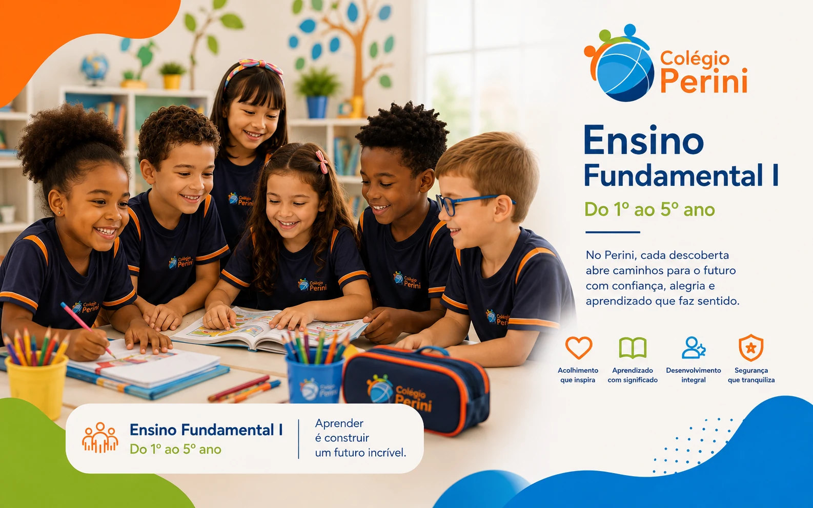
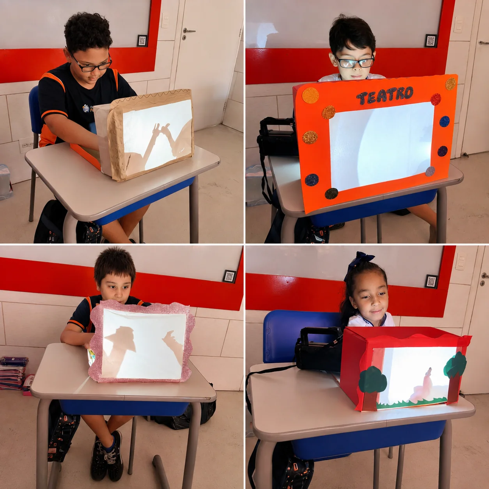

Uma base consistente
O Fundamental I fortalece leitura, escrita, raciocínio e resolução de problemas, ajudando o aluno a compreender, expressar ideias e avançar com segurança.
Do 1º ao 5º ano, o estudante constrói fundamentos, hábitos e confiança com acolhimento e acompanhamento próximo.

É uma fase de descobertas, desenvolvimento de hábitos, convivência e ganho gradual de autonomia.
O Fundamental I fortalece leitura, escrita, raciocínio e resolução de problemas, ajudando o aluno a compreender, expressar ideias e avançar com segurança.
Atividades e projetos aproximam os conteúdos da realidade e criam oportunidades para perguntar, investigar, experimentar e compartilhar descobertas.
Organização, responsabilidade e hábitos de estudo são desenvolvidos de forma progressiva, com atenção às necessidades de cada estudante.
O aluno é reconhecido em sua individualidade, e a comunicação com as famílias ajuda a manter escola e responsáveis próximos ao processo de aprendizagem.

Em atividades práticas, os alunos experimentam, produzem e compartilham descobertas, dando sentido ao que aprendem.
O Educacross amplia a prática de Matemática, Língua Portuguesa, alfabetização e leitura com experiências digitais que envolvem o estudante e apoiam o acompanhamento do professor.
Tecnologia entra como recurso pedagógico — nunca no lugar do professor.
Jogos e desafios conectados aos objetivos de aprendizagem.
Trilhas que ampliam as oportunidades de prática e desenvolvimento.
Evidências que ajudam o professor a perceber avanços e necessidades.
No Fundamental I, o Sistema COC integra material didático, recursos digitais, avaliações e apoio ao desenvolvimento de hábitos de estudo.
A passagem para o Fundamental II amplia responsabilidades e conteúdos. O objetivo é que o estudante avance com base, hábitos e confiança para a nova etapa.
Veja como o Perini acompanha o aumento de autonomia, a ampliação dos conteúdos e as mudanças próprias da pré-adolescência.
Agende uma visita, conheça a proposta e converse com a equipe sobre essa fase.